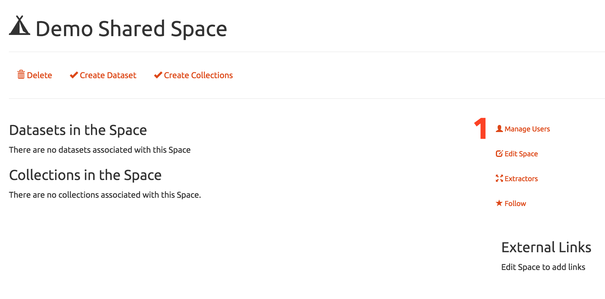

4CeeD Curator FAQ
What is this?
The 4CeeD Curator is a web tool used to organize and manage scientific data files and metadata.
Why use this?
The 4CeeD Curator replaces outdated and inefficient methodologies used in many laboratories for data capture, storage, and organization.
How can the 4CeeD Curator help me?
- All accessible data can be downloaded with its data-model hierarchy preserved.
- Extractors pull descriptive metadata out of files and instrument logs for analysis and discovery.
- Get reliable calibration data and how to reference it.
- Share and search your data and use powerful free-text and faceted search for comparisons.
- Broad set of customizable access control rules.
1. Go to the create spaces page.
2. Choose a name for your space.
3. Give your space a description.
4. Click Create.

1. Select manage users
2. Add user to a role by entering the NetID or start typing for auto suggestions.
3. Click submit to confirm addition.
4. Optionally invite a non 4CeeD user to create an account and access the space.
1. Select a collection or dataset and then choose a space to add it to.
2. A new icon will show what has been shared. Click x to remove the collection/dataset from that space.
1. Click either link to create a new collection.
1. Give a name to your new collection.
3. Optionally give your collection a description.
4. Optionally share the new collection in an existing space.
5. Click create or reset.
A collection is created.
1. Click the create child collection link.
2. View what parent collections the selected collection is in.
1. Give your child collection a name.
2. Provide a description.
3. Click create or reset.
1. Select the My Collections tab from the dashboard to view latest collections.
2. View collections that you have created.
3. View collections that you are collaborating on.
4. View all collections.

1. View or update collection name.
2. View or update collection description.
3. Download all datasets and files in a collection.
4. Create a child collection.
5. View spaces that the collection belongs to.
6. View what parent collections this collection belongs to.
7. View what datasets are in the collection.
1. Click either link to create a new dataset
2. Give your dataset a name.
3. Optionally give your dataset a description.
4. Optionally share the new dataset in an existing space.
5. Click create or reset.
A dataset is created.
1. View latest datasets from the dashboard.
2. View datasets that you have created.
3. View datasets that you are collaborating on.
4. View all datasets.
Individual datasets
1. Add files to a dataset, download or delete a dataset, follow a dataset, or view who the collaborators are.
2. View thumbnail of files in dataset.
3. View the metadata entered by the user from a template.
4. Manage what collections the dataset is in.
5. Manage what space the dataset is in.
6. Create tags for the dataset for better search.
7. Download a file.
1. Select the Metadata tab to view all of the user defined metadata.
2. List of key values entered from a 4CeeD Uploader template.
3. Dataset files can be downloaded if the user is the creator or has been given permission.
3. 4CeeD uses the Library of Congress BagIt Spec which preserves the experiments hierarchy and provides the user all the original files, user defined metadata, and extracted metadata in its original file hierachy.
For example, [.png, .dm3, .tif, .txt, .jpg, .ibw]
Atomic Force Microscopes, and Xray.
* If you are in a lab it's strongly suggested to use the streamlined 4CeeD Uploader. The 4CeeD Uploader supports metadata templates for quick and accurate metadata capture.
1. View information about the dataset that files are to be uploaded to.
2. Select or drag files to upload.
3. Start or cancel upload.
1. View thumbnail preview of uploaded file.
2. Follow, Delete, or Download file/metadata.
3. Start or cancel upload.
4. Add tags to image.
5. View system generated metadata.
6. Creator metadata.
1. Right click on the image where you want to add a tag or comment.
1. View extraction events.
2. Manually submit a file for extraction.
3. Post comments.
4. System generated metadata.
1. View information about the dataset that files are to be uploaded to.
2. Extractor to run or rerun.
3. Optional parameter for extractor.
4. Submit file for extraction.
1. Optionally create your template from another one.
2. Give your template a name.
3. Optionally give your template tags for later search.
4. Add new fields to your template.
5. Click the box to share template within a space or globally.
6. Enter information for the template.(Name, Unit Type, Data Type, Value, Requirement). Optionally remove rows.
A template is created.
1. Choose a template to update.
2. Optionally change template name.
3. Add or remove tags.
4. Add new fields.
5. Share template or revoke shared status.
6. Remove row or update name, type, or value fields.
1. Select the template to delete
2. Click delete this template to remove.
1. Admin users have access to additional menu options.
1. View all users and de-activate or promote users.
2. Click submit to commit changes.
1. Create a new security group.
2. Edit or delete existing security roles.
1. Create a new role to moderate access to a space.
2. Give the new role a name.
3. Optionally provide a description of the new role.
4.Choose from nearly 50 different security properties
1. Customize the look of the curator, add google analytics tracking code, and update branding and other dynamic text.
1. Enter terms to search on.
2. View a list of files, datasets, and collections that contain the search terms.
Users can only view objects that they have access to.
1. Select dashboard from menu.
2. Update profile, manage templates, or create new items.
3. View recent activity, tree view, followers, spaces, datasets, and collections.
1. Select tree view to visualize project as a tree view. Each item is selectable.
2. Collections are represented as folder icons.
3. Datasets are represented with a glyph icon.
1. Enter a valid email.
2. Click create an account.
1. Check your email for instructions on how to finish the account creation.
2. Finish registration by filling out profile fields.
1. Select contact support from the help menu.
2. Enter a subject for the email message.
3. Enter a body for the email message.
4. Complete reCAPTCHA validation.
5. Click button to send email.
1. Click on followers to view users that are following you.
2. View users, spaces, files, datasets, and collections logged in user is following.